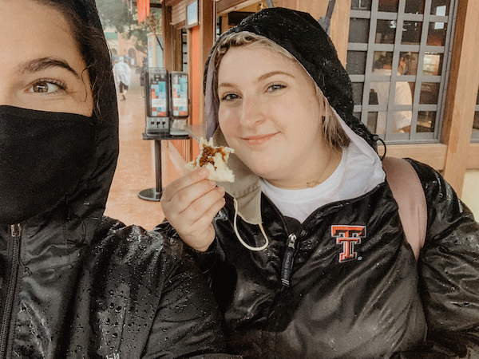

Hello World! I'm Emma Frampton, as you can tell from the title of this webpage. I took some Codecademy classes, but I'm looking forward to learning coding in a more formal setting. I'm a full-time student at TTU, majoring in Advertising and minoring in Creative Media Industries. I've got two internships going on, where I create content for and manage social media pages.
here's a lil bit about my short weekend trip to epcot
my best friend, alli, is getting married. we're both 22, so this is kinda wild for me. I'm her maid of honor, and over this summer (aka quarantine with my parents), I planned a bachelorette party at disney world! we both went to epcot for one day (monday the 28th) and enjoyed their food and wine festival. it rained the whole day however, but we still had a blast. below is a photo of us!

here, we were at the japan booth trying the chicken teriyaki bun. check out my new food instagram (@emframpseats) to see how i felt about it!
also, I wanna credit my dad for helping me out! we're both learning coding together right now. he's doing javascript, bootstrap, and some other fun stuff, but we help each other out. it's thanks to him that I have github at my disposal now. it's a lil tricky, but super useful. thanks, dad! :)